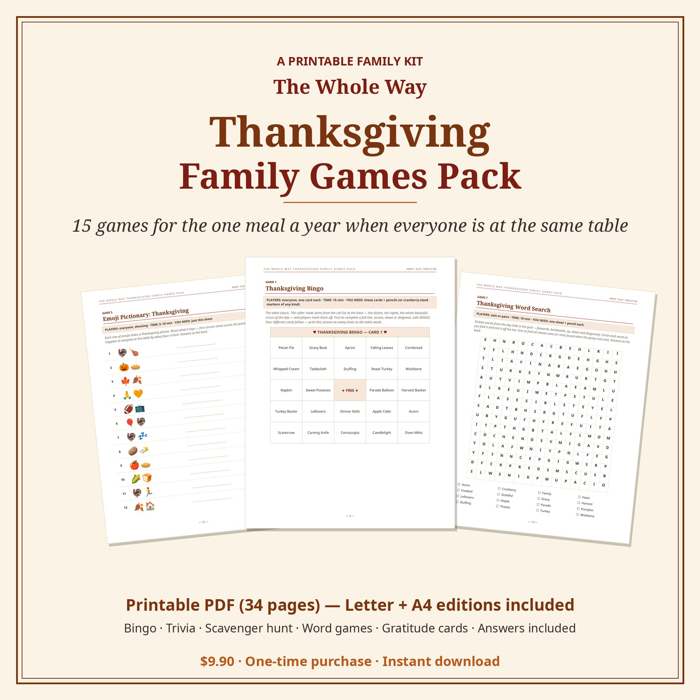
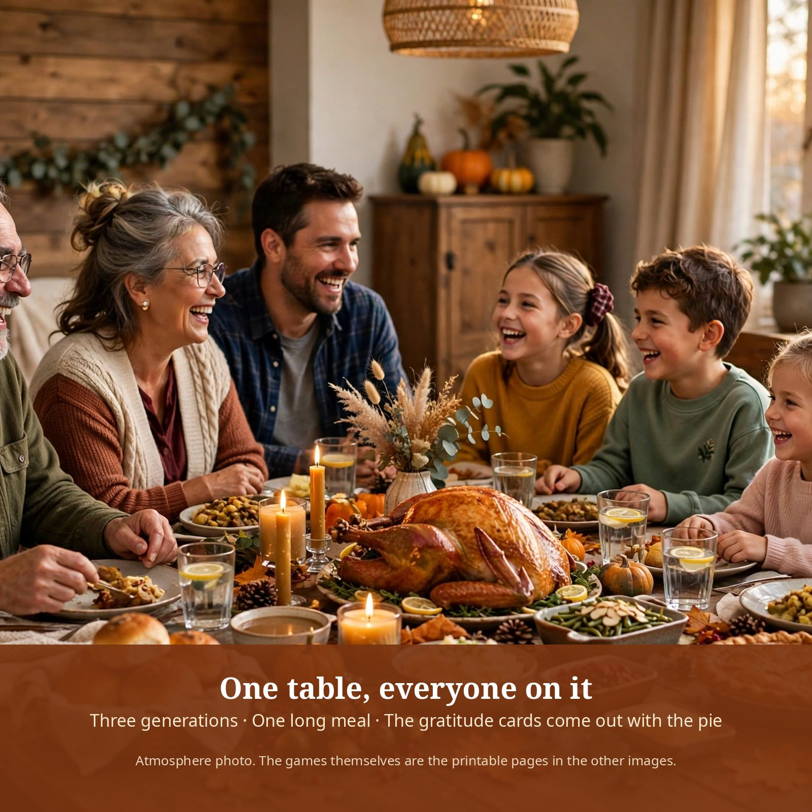
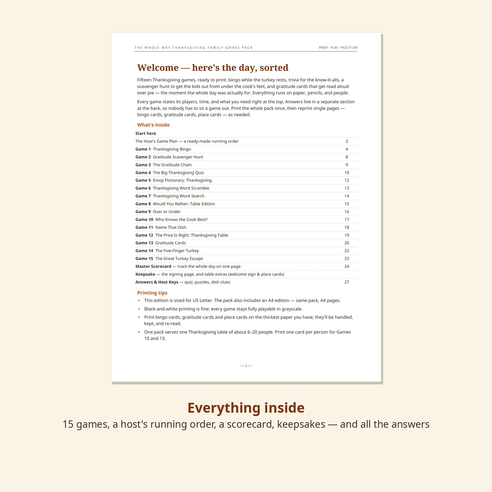
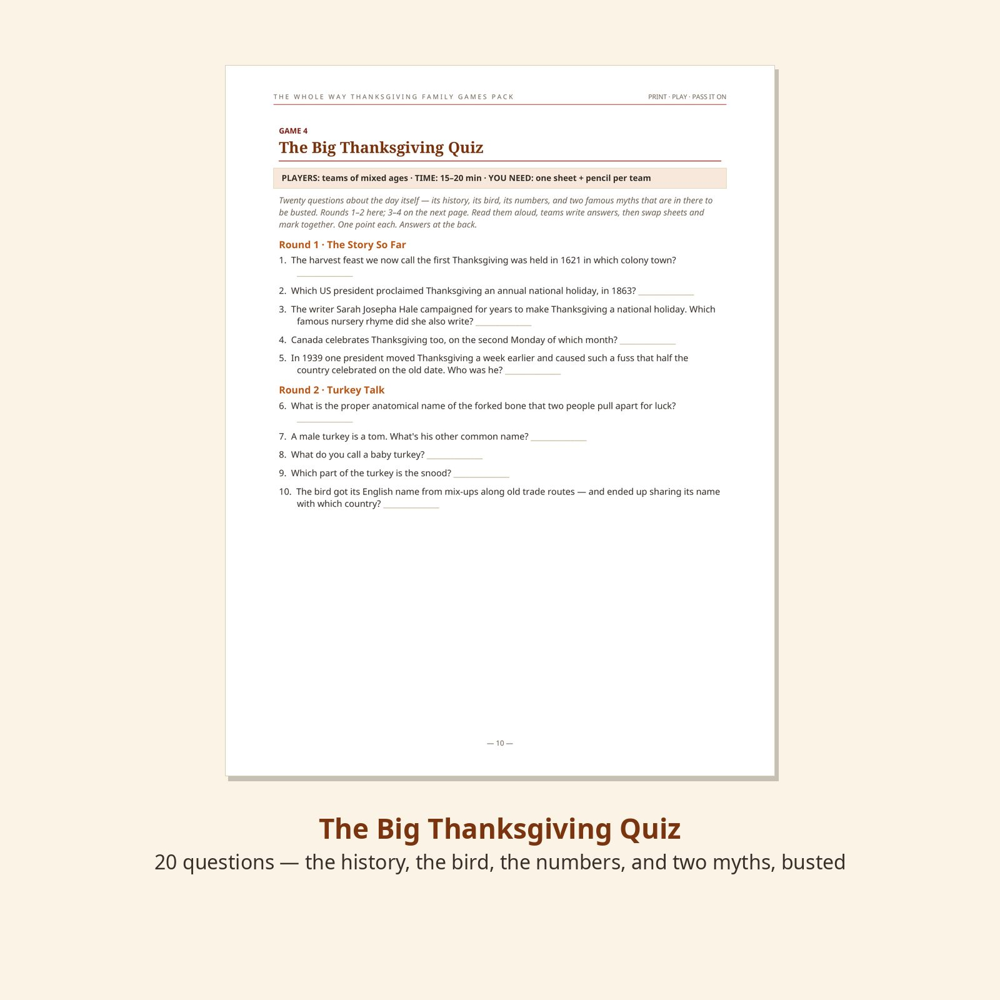
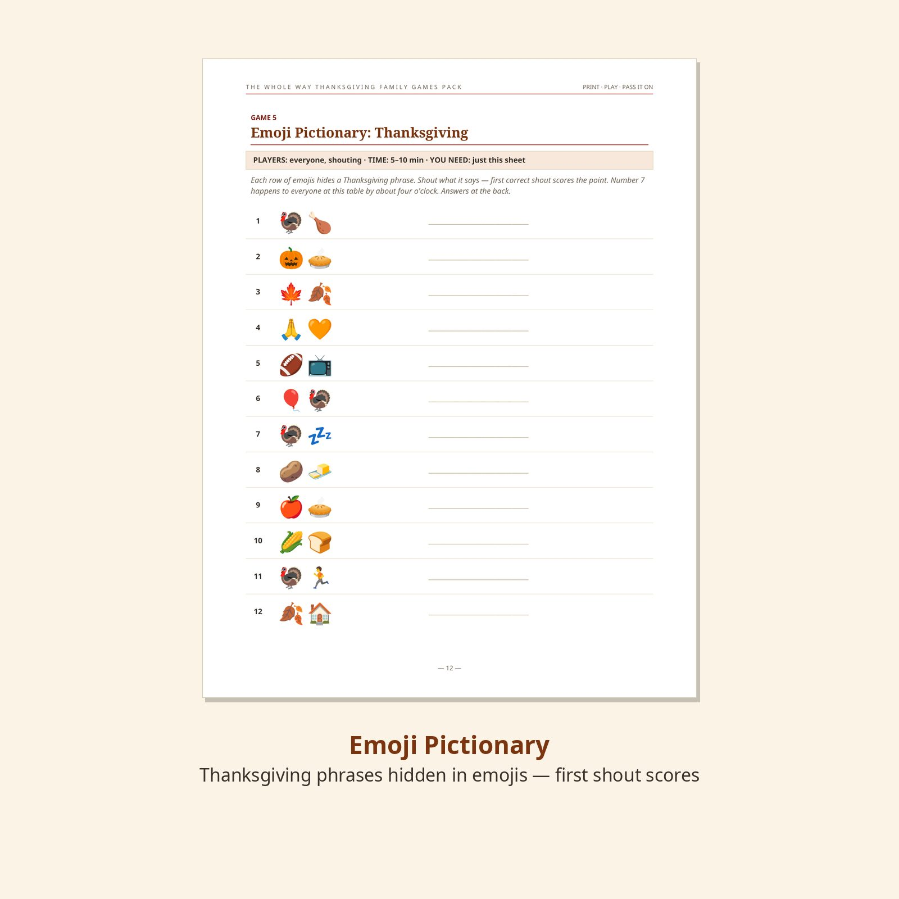
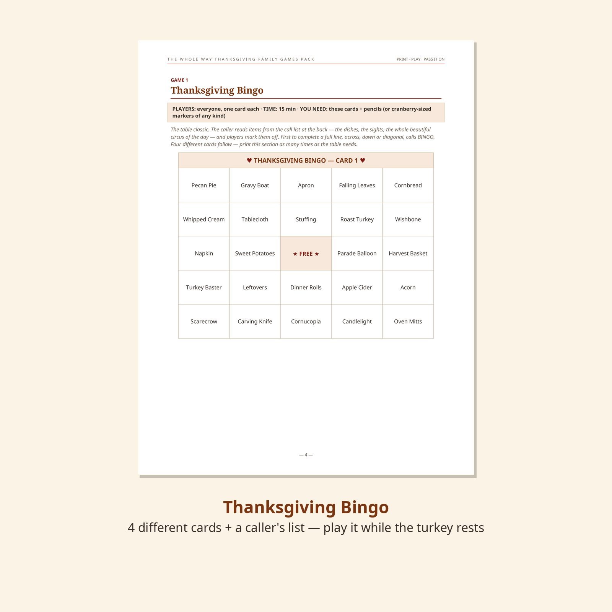
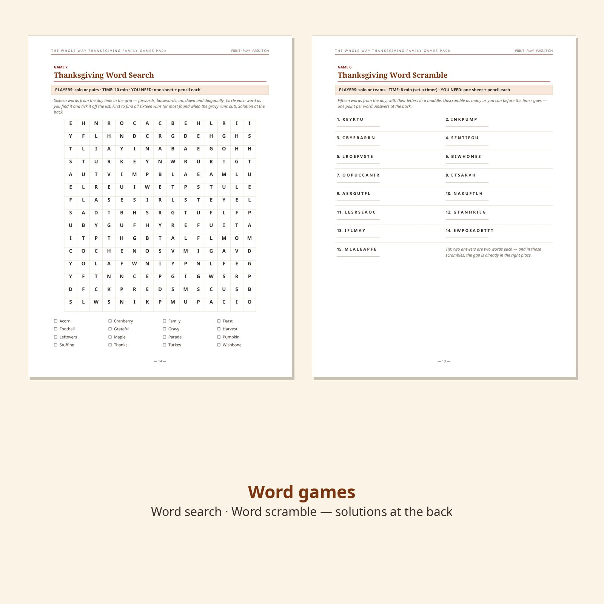

The Whole Way Thanksgiving Family Games Pack
Fifteen games for the one meal a year when everyone is at the same table — bingo while the turkey rests, trivia for the know-it-alls, a scavenger hunt that buys the kitchen one peaceful hour, and gratitude cards that get read aloud over pie.
$9.90 one-time payment
Buy the Thanksgiving Games PackSecure checkout by Creem — taxes are handled by Creem at checkout. Instant download after purchase. Prefer the full store listing? View this product on Creem.


The moment this is for
One day a year, the whole family is in the same room at the same table. The grandparents drove in. Somebody's cousin brought a friend who is now, functionally, family. The kids are taller than they were. The cook has been standing since seven.
This pack is built for that table. The games aren't really the point — they're how the day gets paced: something for the kids to run off with while the kitchen is chaos, something for the whole table while the turkey rests, and one quiet thing at the end, over pie, when everyone writes down one thing they're thankful for and the host reads them aloud. Those cards get kept. The letter your table writes to next year's table gets sealed, and opened in twelve months, and somebody cries. That's the product, honestly. The bingo is excellent too.
What you get
- Two printable PDFs — the complete pack in US Letter (34 pages) and A4 (34 pages). Print the whole pack once, or just the games you're playing today, in color or black-and-white.
- Welcome & Contents — what's in the pack and how to run it.
- The Host's Game Plan — a ready-made running order built around the meal, with house rules that prevent arguments.
- 15 complete games — the full list is below; every game states its players, time and what you need at the top of its page.
- The heart of the pack — gratitude cards everyone writes and hears read aloud with dessert, plus a letter to next year's table, sealed tonight and opened next Thanksgiving.
- Master Scorecard & table extras — one page tracks the scored games and names today's champion; a printable welcome sign and place cards with a conversation starter under every name.
- Answers & Host Keys — every quiz answer with a one-line story, the price key, emoji / scramble / dish answers, the word-search solution and the bingo call list, in a separate section at the back so nobody has to sit a game out.
- Yours to reprint every Thanksgiving — there's no year printed anywhere in the pack, by design. Buy it once and it's your family's Thanksgiving kit every year.





All 15 games, in the order they appear in the pack
Who this is for
- Anyone hosting Thanksgiving — the whole three-generation table, Friendsgiving tables, and anyone who inherited the hosting job this year.
- Hosts who want the pacing handled: games for the cooking hours, the resting-turkey window, and the pie hour, in a ready-made order.
- Anyone who wants the day remembered, not just eaten: gratitude cards, the sealed letter, the signing page.
Who this is not for
- Anyone who wants an app or screen-based games — this is paper, on purpose.
- Anyone who needs games in a language other than English (this edition is English only).
- Anyone who wants an editable / Canva-template pack — this is a finished, print-and-play PDF.
FAQ
What exactly do I receive?
A ZIP containing the complete pack twice — a 34-page US Letter PDF and a 34-page A4 PDF (same games, two page sizes) — plus a short read-me. Nothing is shipped; it's a download, ready right after checkout.
Is everything really printable at home?
Yes. Pages are designed with real margins and black-and-white printing stays fully playable — no game hides essential information in color. The emoji game is the only color page, and it also works read off a phone screen passed around the table.
Is it only for this year's Thanksgiving?
No — nothing in the pack is dated. There is no year printed anywhere in it, by design: print it this Thanksgiving, and again next year, and the year the kids are taller than you.
How many people can play?
Most games work from 6 people up; the shouting games (Emoji Pictionary, Over or Under, Would You Rather) scale to a whole room, and the scavenger hunt happily absorbs every child in the house. One pack serves a table of about 6–20 people.
What's your refund policy?
Refunds follow the policy shown at checkout. If the file is faulty or won't open, email us and we'll fix it or refund you — and if you find a typo or can prove a turkey fact wrong, tell us: corrections go into the next edition, and updates to this edition are free for buyers.
Was AI used to make this?
Yes — openly. The games were produced with AI assistance and human editorial review, and the table photograph on this page is AI-generated atmosphere imagery (it's labelled as such). Every preview of the games themselves is a real page from the actual PDF. Every question, clue, puzzle and card was written for this pack, and the history is the standard documented record — where a number is an estimate, the answer key says so.